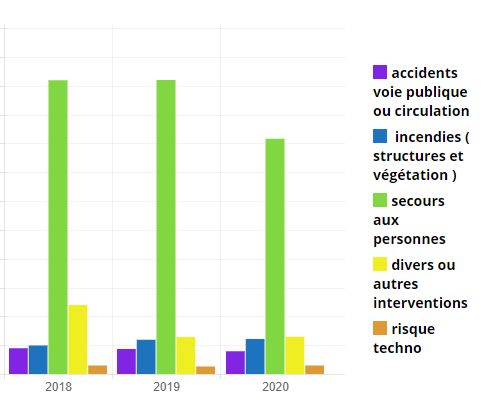
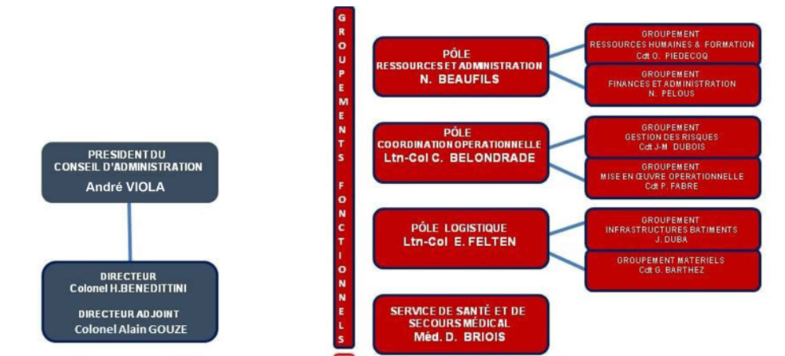
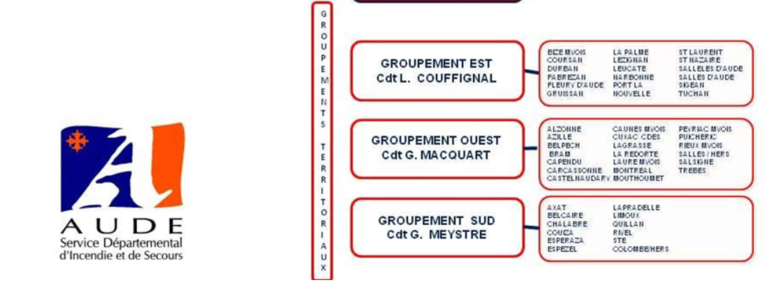

Quel est le rôle du Sapeur Pompier Volontaire ?
Le rôle du SPV est le même que celui du SPP (Sapeur Pompier Professionnel). Ses missions sont variées: secours à personne, extinction d'incendie urbain ou en
forêt, opération diverses...
Il intervient sur plein de milieu et de cadre différent: milieu urbain, rural, forêt, montagne, mer... Le sapeur pompier a pour but d'aider les autres, c'est là son rôle principal.

Les interventions de secours à personne représente plus de 80% des départs, cependant seulement 25% d'entre elles s'avère être une urgence vitale.
Comment est organisé le SDIS 11 ?
Le SDIS 11 est organisé en deux partie, les groupements fonctionnels et les groupements territoriaux.
Ils sont tout deux dirigés par le président du conseil d'administration, monsieur André VIOLA et par le directeur
du SDIS, le colonel Henri Benedittini.


Comment devenir Sapeur pompier Volontaire ?
Pour souscrire un engagement de sapeur-pompier volontaire, vous devez remplir les conditions suivantes :
-
Etre âgé de seize ans au moins. Si vous êtes mineur, le consentement écrit de vos parents ou représentant légal est exigé ;
-
Jouir de vos droits civiques (ou des droits équivalents reconnus dans l’Etat dont vous êtes ressortissants) ;
-
Ne pas avoir fait l’objet d’une condamnation incompatible avec l’exercice des fonctions, mentionnée au bulletin n° 2 du casier judiciaire (ou d’une condamnation de même nature dans l’Etat dont vous êtes ressortissants) ;
-
Vous engager à exercer votre activité de sapeur-pompier volontaire avec obéissance, discrétion et responsabilité, dans le respect de la charte nationale du sapeur-pompier volontaire ;
-
Vous trouver en situation régulière au regard des dispositions du Code du service national (ou au regard des obligations du service national de l’Etat dont vous êtes ressortissants) ;
-
Etre apte physiquement et médicalement.
-
Etre titulaire du PSC1.
Si vous correspondez aux conditions cités ci-dessus, suivez les
étapes suivantes :
-
Remplir le formulaire en bas de la page et l'envoyer. Le chef de centre le plus proche
de votre secteur vous contactera sous une semaine.
-
Remplir le dossier fournit par le chef de centre le lui rendre.
-
Passer des tests sportifs.
-
Passer une visite médicale.
-
Passer face au conseil de centre qui décidera de vous accepter dans la caserne ou non
selon les réponses aux questions qu'ils vous poseront (exemple: quels sont vos éléments
de motivation, avez vous peur du sang, pouvez vous être à la caserne en moins de 7
minutes en cas de départ en intervention, etc...).
-
Signer l'engagement de 5 ans.
-
Passer la journée d'intégration qui a lieu au SDIS situé à Carcassonne.
-
Passer la FI (=Formation Initiale) composée de 5 formations :
-
PSE1 (Premiers Secours en Equipe 1) = 1 semaine
-
PSE2 (Premiers Secours en Equipe 2) = 1 semaine
-
Incendie = 1 semaine
-
FDF (Feu De Forêt) = 3 jours
-
Div (opérations Diverses) = 2 jours
Quels sont les posibilités d'évolution ?
| 3 ans |
3 ans |
6 ans |
9 ans |
12 ans et plus |
| Formation chef d'équipe |
Caporal (chef binôme) |
|
|
|
| Formation Chef d'Agres Ambulance |
|
Sergent (responsable intervention ambulance) |
|
|
| Formation Chef d'Agres Tout véhicule |
|
|
Adjudant (reponsable toutes interventions) |
|
| Formation officier |
|
|
|
Lieutenant et plus (direction) |